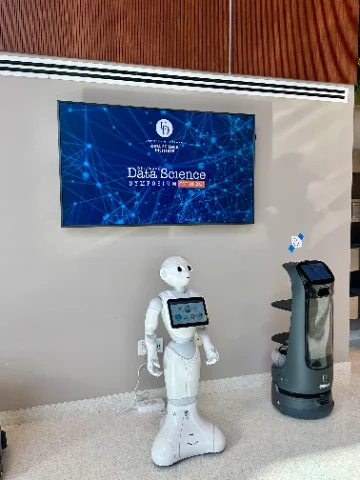
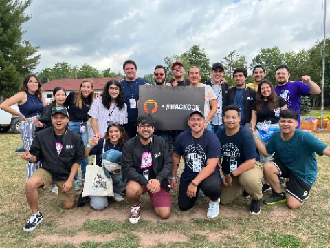
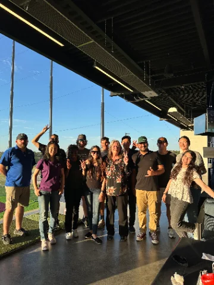
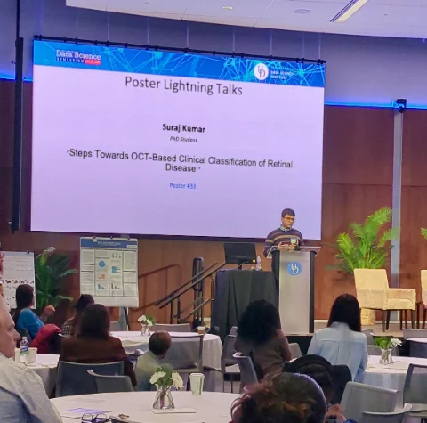
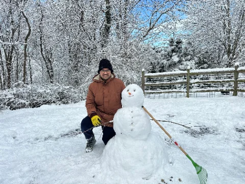
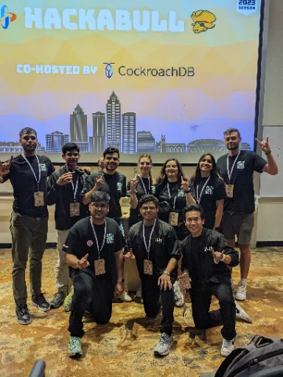

$ whoami
About
I'm a first-year Computer Science PhD student at the University of Delaware, working with Dr. Rahmat Beheshti in the HealthyLAIfe Lab. My research sits where deep learning meets medicine. Right now that means two things: building transformer attention mechanisms that account for a child's developmental age when reading their health records, and building OCT imaging pipelines that help ophthalmologists stage sickle cell retinopathy.
The common thread is pediatric data. Kids aren't small adults — a heart rate that's alarming at sixteen is normal at six months, and retinal disease in children with sickle cell progresses differently than in adults. Most clinical ML quietly ignores this. I don't think it should.
Before Delaware, I did my B.S. at the University of South Florida, where I did NLP research in the AHMR Lab, co-directed Hackabull, and built great memories. I grew up in New Delhi, India.
$ cat ~/research/interests.md
Research interests
Broadly: deep learning for medicine — medical imaging, longitudinal EHR modeling, and attention architectures. These are the projects that interest currently translates into:
nemours/retinal-oct
Staging sickle cell retinopathy from OCT scans
An ML pipeline that reads optical coherence tomography scans to find early signs of retinal damage in children with sickle cell disease.
healthylaife/age-aware-ehr
Age-conditioned attention for pediatric EHR
A lab value means different things at 6 months and 16 years, so I'm building transformers whose attention is conditioned on developmental age — comparing additive injection against FiLM-style conditioning — and benchmarking longitudinal trajectory encoders (HyMaTE, Mamba-based) on the PIC dataset for clinical prediction tasks.
usf/llm-reasoning · earlier work
Reasoning in language models
Built a multi-agent RISK simulation with persona-based heuristics via Ollama, benchmarked RAG prompting techniques (CoT, few-shot, LOCI) that improved rule-based inference accuracy by 15%, and contributed to work showing LoRA training improves multi-hop logical reasoning in small language models.
$ git log --since="1 year ago"
On GitHub
contributions, last 12 months
@surajcodesml →$ git log --graph --all
Timeline
Developing age-conditioned attention mechanisms for pediatric EHR data and benchmarking longitudinal trajectory encoders (HyMaTE, Mamba-based) on the PIC dataset.
// status: in progressPresented "Steps Towards ML-Assisted Clinical Staging of Retinal Disease" — first poster of the PhD, walking researchers and data scientists through the OCT staging pipeline.

Began the doctorate.
git checkout -b phdBuilt the OCT analysis pipeline for sickle cell retinopathy.
Co-authored "Curiosity Exploration Styles in Word Association Task," published at the 47th Annual Meeting of the Cognitive Science Society. read it →
"Improving Multi-hop Logical Reasoning in Small LMs with LoRA Training" — showing LoRA training on small datasets improves logical reasoning and transferability in small language models. read it →
// the first one always feels the biggestBuilt a multi-agent RISK simulation using persona-based heuristics via Ollama, and designed RAG prompting benchmarks (CoT, few-shot, LOCI).
First industry internship, on an actual steel mill floor. Built a Power App for real-time electricity cost monitoring and an ML-based scrap recipe optimizerand cut production cost by 1.5–2%.
Co-directed the event as part of a 12-person team. 500+ attendees from 12+ schools, $20k+ in sponsorships and $6k+ in prizes.

$ ls ~/papers
Checkout peer reviewed publications here:
$ cat /etc/hobbies
Beyond the lab
3D printing
Best summer hobby.
Wrenching on my car
Yes I fix my car myself. Latest job: a full AC compressor replacement. It blows cold.
Pickleball
Standing challenge to anyone in Newark, DE. Bring your own paddle.
Board games
Catan, mostly. I will trade you wheat, and I will not apologize for where I put the robber.
$ ls ~/photos
Photo wall
Life outside the paper deadlines



